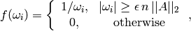

In-place inversion¶
General inversion¶
This routine computes the in-place inverse of a general fully-populated
(invertible) matrix  as
as
![\[
A^{-1} = U^{-1} L^{-1} P,
\]](../_images/math/d7c6f528a51c2e02c1de138ef2262ff304d2eb2b.png)
where  is the result of LU factorization with partial pivoting.
The algorithm essentially factors , inverts
is the result of LU factorization with partial pivoting.
The algorithm essentially factors , inverts  in place,
solves against
in place,
solves against  one block column at a time, and then applies the
row pivots in reverse order to the columns of the result.
one block column at a time, and then applies the
row pivots in reverse order to the columns of the result.
- void Inverse(Matrix<F>& A)¶
Overwrites the general matrix A with its inverse.
- void Inverse(DistMatrix<F, MC, MR>& A)¶
The same as above, but for distributed matrices.
Hermitian pseudoinverse¶
Computes the pseudoinverse of a Hermitian matrix through a customized version of RealHermitianFunction which used the eigenvalue mapping function

where  is the relative machine precision,
is the relative machine precision,
 is the height of , and
is the height of , and  can be computed
as the maximum absolute value of the eigenvalues of .
can be computed
as the maximum absolute value of the eigenvalues of .
- HermitianPseudoinverse(UpperOrLower uplo, DistMatrix<R, MC, MR>& A)¶
Computes the pseudoinverse of a distributed real symmetric matrix with data stored in the uplo triangle.
- HermitianPseudoinverse(UpperOrLower uplo, DistMatrix<Complex<R>, MC, MR>& A)¶
Computes the pseudoinverse of a distributed complex Hermitian matrix with data stored in the uplo triangle.
HPD inversion¶
This routine uses a custom algorithm for computing the inverse of a
Hermitian positive-definite matrix as
![\[
A^{-1} = (L L^H)^{-1} = L^{-H} L^{-1},
\]](../_images/math/2fbf1af98250da6bc759d638325f09a369b35849.png)
where is the lower Cholesky factor of (the upper Cholesky
factor is computed in the case of upper-triangular storage). Rather than
performing Cholesky factorization, triangular inversion, and then the Hermitian
triangular outer product in sequence, this routine makes use of the single-sweep
algorithm described in Bientinesi et al.’s “Families of algorithms related to the
inversion of a symmetric positive definite matrix”, in particular, the variant 2
algorithm from Fig. 9.
If the matrix is found to not be HPD, then a NonHPDMatrixException is thrown.
- void HPDInverse(UpperOrLower uplo, Matrix<F>& A)¶
Overwrite the uplo triangle of the HPD matrix A with the same triangle of the inverse of A.
- void HPDInverse(UpperOrLower uplo, DistMatrix<F, MC, MR>& A)¶
Same as above, but for a distributed matrix.
Triangular inversion¶
Inverts a (possibly unit-diagonal) triangular matrix in-place.
- void TriangularInverse(UpperOrLower uplo, Diagonal diagonal, Matrix<F>& A)¶
Inverts the triangle of A specified by the parameter uplo; if diagonal is set to UNIT, then A is treated as unit-diagonal.
- void TriangularInverse(UpperOrLower uplo, Diagonal diagonal, DistMatrix<F, MC, MR>& A)¶
Same as above, but for a distributed matrix.